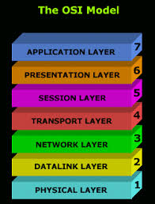
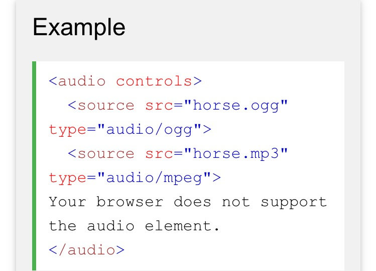
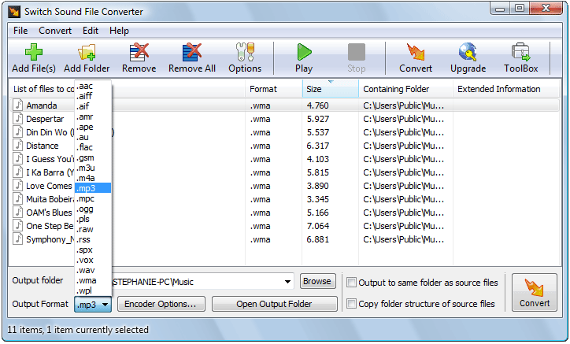

OSI Reference Model
Audio

An audio player with two source files. The browser should choose which file (if any) it has support for

Convert wma, wav, aiff, ogg and 40 other audio file formats. It can convert mp3, wav or wma format and more to the format of your choice. Switch Audio Converter is very easy to use. Just add the files you want to convert to the list, select the format you want to use, and then click the convert button.
